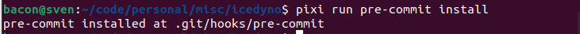
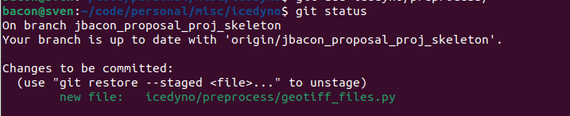
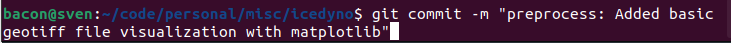
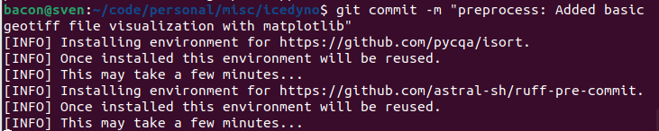
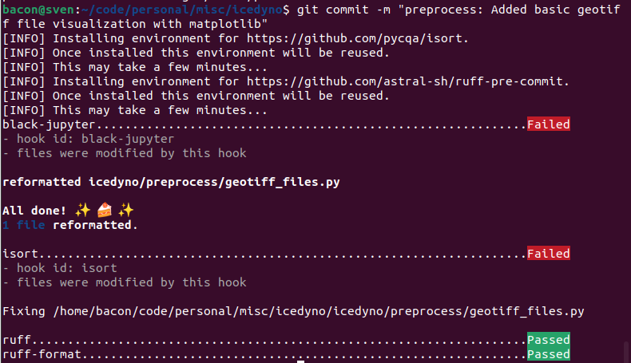
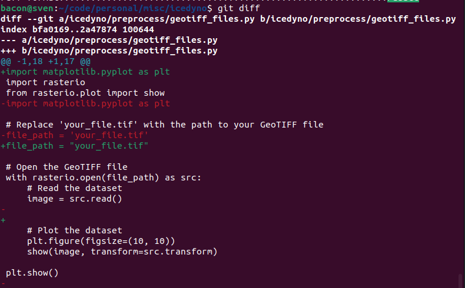
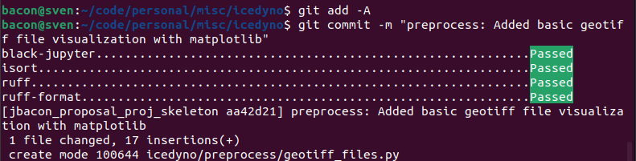

Setup¶
To get started, clone the repo, checkout this branch, using Linux install pixi with:
curl -fsSL https://pixi.sh/install.sh | bash
For Mac, install via homebrew with
brew install pixi
If using windows, install pixi with:
iwr -useb https://pixi.sh/install.ps1 | iex
See here for more info on pixi: https://pixi.sh/.
Then to install the project and its dependencies, type:
pixi install
You could activate the virtual environment with pixi shell (so every command uses the virtual environment until you type exit) or prefix your commands with pixi run inside the icedyno project folder (ex: pixi run pytest).
To set up the automatic linters (that run every time you commit your work), you would run:
pixi run pre-commit install

Testing the set up¶
If you activated the pixi environment, type pytest. If not, type pixi run pytest. You should have one dummy test that runs on that command.
What does it look like when the linters and pre-commit hooks run?¶
After you've installed the pre-commit hooks and have changes to commit, this is what the process will look like for committing:
-
You have changes to commit:
 -
Commit with a descriptive message:
 -
One-time setup of the linters:
 -
Our code was not already compliant with the linters, so they "failed" our commit and automatically changed things about our code to become compliant:
 -
Go ahead and inspect what got modified if you'd like:
 -
Add the changes and redo your commit command:

Adding new dependencies¶
Just write pixi add conda_or_pip_package_name. You can add multiple dependencies at once (which is better than one at a time, pixi will have to recompute work otherwise) by adding a space between the package names. I.e. pixi add package1 package2 package3.
You'll see that the pixi.toml and pixi.lock files will change after adding your new dependencies -- make sure to add those changes in your next commit!
Removing a dependency¶
pixi remove package_name
Documentation¶
Mkdocs is the documentation engine that takes hand-written markdown files to a project website. Please read more at https://www.mkdocs.org/.
Mkdocstrings is a mkdocs extension that allows autogenerated documentation to be made, by scraping type hints and documentation strings for any python modules within the project.
Building and serving the documentation commands locally¶
mkdocs new [dir-name]- Create a new project.mkdocs serve- Start the live-reloading docs server.mkdocs build- Build the documentation site.mkdocs -h- Print help message and exit.
Documentation files layout¶
mkdocs.yml # The configuration file.
docs/
images/ # Folder for storing local images for documentation, including for the README.md.
index.md # The documentation homepage.
... # Other markdown pages.
Add a new page or subpage¶
To add a new page, in mkdocs.yml add the page (or subpage) by:
site_name: IceDyno Documentation
nav:
- Home: index.md
- Setup: setup.md
- New Page: newpage.md
- New SubPage: newsubpage.md
- ...
Autogenerate documentation for an IceDyno module¶
Add to a markdown file something like this:
::: icedyno.preprocess